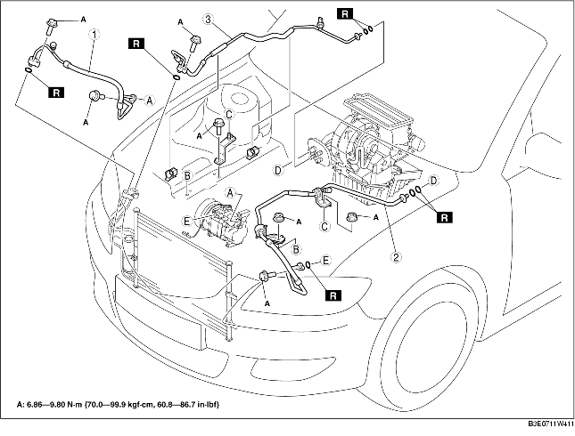

1. Disconnect the negative battery cable.
2. Discharge the refrigerant from the system. (See REFRIGERANT RECOVERY.) (See REFRIGERANT CHARGING.)
3. Remove the P/S fluid reserve tank.
4. Remove the coolant reserve tank. (See COOLANT RESERVE TANK REMOVAL/INSTALLATION.)
5. Remove the accelerator cable.
6. Remove the P/S fluid hose bracket.
7. Remove in the order indicated in the table. Do not allow compressor oil to spill.
8. Install in the reverse order of removal.
9. Perform the refrigerant system performance test. (See REFRIGERANT SYSTEM PERFORMANCE TEST.)

.
1. Disconnect the block joint type pipes by grasping female side of the block with pliers or similar tool and holding firmly, then remove the connection bolt or nut.
1. Set the SST.
2. While looking through the inspection hole of the SST, insert the protruding part of the SST until it makes contact with the cage section.
3. Use the SST to disconnect the male pipe or hose from the female by pulling the male pipe or hose.
1. Apply compressor oil to the O-rings and connect the joints.
2. Tighten the joints.
1. Tighten the bolt of joint by hand.
2. Connect the block joint type pipes by grasping the female side of the block with pliers or similar tool and holding firmly, then tighten the connection bolt or nut with a torque wrench.
1. Connect the male pipe or hose by twisting it onto female pipe until the garter spring at the male pipe or hose is over the flared end of female pipe.